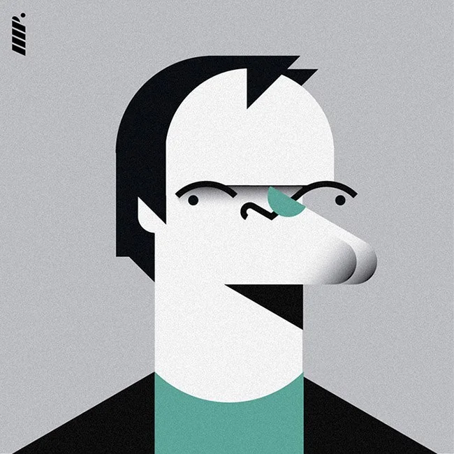
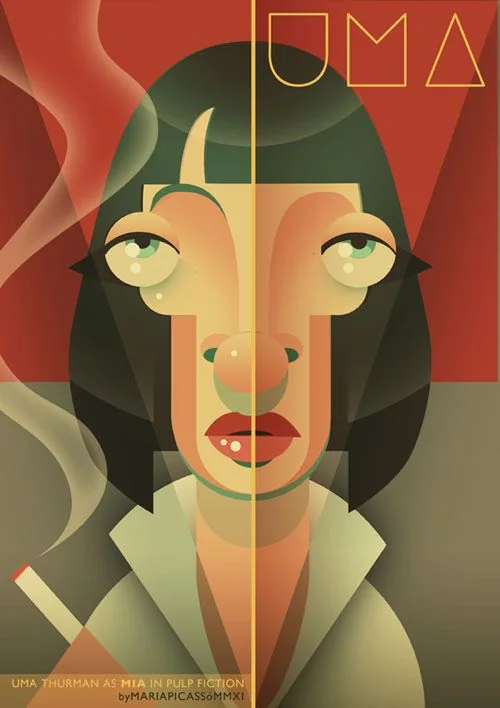
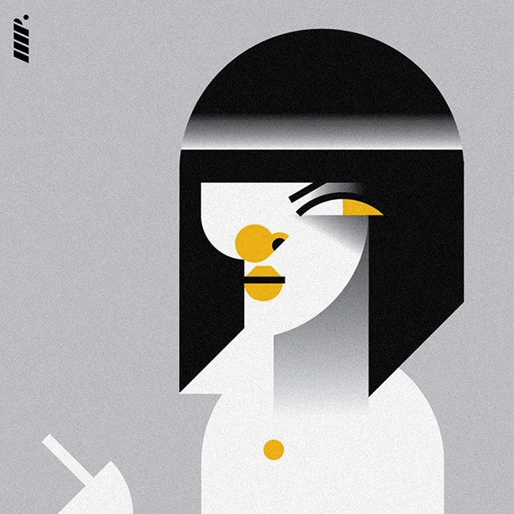

Почему лицо почти невозможно воспринимать просто как изображение
Человеческая зрительная система эволюционно настроена на быстрое распознавание лиц. Мы считываем их как социальные сигналы: направление взгляда, выражение эмоций, возрастные признаки, намерения, степень угрозы или расположенности.
Поэтому портрет действует на нас иначе, чем абстрактная композиция. Сначала мы встречаем в нём человека и лишь затем — художественный объект.
Но здесь возникает парадокс: чем более однозначно изображение «проявляет» человека, тем быстрее зритель завершает его восприятие. Интерес начинается там, где человек уже узнаваем — но образ ещё не закрывается единственной интерпретацией.
Причём здесь кристалл Неккера
Луи Альбер Неккер (1786–1861) был не психологом и не художником, а швейцарским кристаллографом и геологом. Он изучал формы кристаллов и обратил внимание на необычное оптическое явление: рассматривая изображения кристаллических форм, можно было заметить, как их кажущаяся пространственная ориентация внезапно меняется.
В 1832 году Неккер описал это наблюдение в научной статье, название которой можно перевести как «Наблюдения некоторых замечательных оптических явлений в Швейцарии и оптическое явление, возникающее при рассматривании изображения кристалла или геометрического тела».
Знаменитый «куб Неккера» первоначально вообще не был кубом в привычном современном виде. Неккер опубликовал изображение ромбовидного кристалла. Позднее именно куб стал классической формой для демонстрации обнаруженного им эффекта.
И в этом есть важная деталь. Неккер обнаружил, что рисунок остаётся неизменным, а восприятие формы меняется.
Перед нами те же линии. Но в один момент одна поверхность кажется передней, другая — задней. Затем, без какого-либо изменения самого изображения, пространственная организация словно переворачивается.
Это классический пример бистабильного восприятия: один и тот же зрительный сигнал допускает две устойчивые интерпретации, между которыми восприятие может переключаться.
Именно поэтому куб Неккера — не оптический трюк. Он демонстрирует принципиальную вещь: мы воспринимаем не изображение как таковое, а интерпретацию изображения.
Узнавание лица: увидеть — ещё не значит узнать
Мы не воспринимаем лицо как простую сумму отдельных признаков — глаз, носа, рта, скул. Зрительная система очень быстро собирает их в целостный образ человека.
Поэтому возможна любопытная ситуация: глаза, нос и рот мы видим совершенно отчётливо, но лицо при этом не узнаём. И наоборот: иногда нам достаточно силуэта, профиля, характерного взгляда или нескольких особенностей, чтобы мгновенно узнать человека.
Получается важное различие: видеть лицо ≠ узнавать человека. Между зрительным сигналом и узнаванием существует работа восприятия.
Узнавание через индивидуальную особенность
При встрече с новым человеком мозг словно заранее предлагает нам некоторый «шаблон» того, как его запомнить. Мы склонны быстро отнести незнакомца к усреднённому человеческому образу: мужчина, женщина, молодой, пожилой, строгий, доброжелательный, привлекательный, обычный.
Эта автоматическая экономия восприятия удобна, но именно она может мешать увидеть конкретного человека.
Чтобы действительно запомнить лицо, необходимо как бы вычесть из него этого усреднённого «манекена» и искать то, что нарушает привычную схему: необычную форму головы, асимметрию, характерную линию бровей, посадку глаз, форму носа, губ, подбородка, особенности мимики.
То есть не просто смотреть, а выделять признаки, которые делают лицо именно этим лицом.
Язык, которым описывают лицо
Для такой работы можно обратиться к языку, которым пользуются при описании и идентификации лиц антропологи, судебные эксперты и криминалисты. В нём лицо рассматривается как система относительно устойчивых признаков: форма и пропорции головы, особенности отдельных элементов, их взаимное расположение, симметрия и асимметрия. При этом каждый параметр можно мысленно утрировать, чтобы сделать индивидуальность заметнее.
Главный из них — форма головы. Она задаёт своеобразные координаты, внутри которых располагаются все остальные детали. Поэтому полезно начать с простого вопроса: если превратить голову в несколько геометрических объёмов, что это будет — овал, вытянутый прямоугольник, трапеция, шар, клин?
Такой способ описания особенно важен для художника: прежде чем рассматривать детали, необходимо увидеть конструкцию целого. Хороший портрет часто начинается именно с этого перехода — от «лица вообще» к конкретной форме, которую невозможно перепутать с другой.
В этом смысле показательны карикатурные портреты каталонской художницы Марии Пикассо Пикер, например Квентина Тарантино и Умы Турман: художник может преувеличить характерную форму головы или отдельную особенность настолько, что узнавание становится практически мгновенным.


Обратите внимание, что происходит при этом с деталями. Их почти нет: лицо собрано из нескольких плоскостей, черты сведены к геометрии. Но узнавание срабатывает мгновенно — потому что художник сохранил не детали, а то, что нарушает усреднённую схему.

Иллюстрации приведены как примеры к разбору, с указанием автора: Мария Пикассо Пикер (Maria Picassó Piquer), каталонская художница-иллюстратор. Права на работы принадлежат ей.
А если сделать лицо недостаточно определённым
Лицо может сначала считываться как лицо, затем распадаться на пятна и линии, а спустя несколько секунд вновь собираться в знакомого человека.
Зритель переживает почти буквальное переключение: «Я вижу» → «Я узнаю» → «Я больше не узнаю» → «Я снова узнаю».
Это уже очень близко к логике куба Неккера. Только в случае куба меняется пространственная интерпретация формы, а в портрете может меняться степень проявленности человека.
Проявленность как перцептивный процесс
Если перенести принцип Неккера на портрет, возникает интересная модель. Человек может одновременно:
- узнаваться и ускользать от идентификации;
- проявляться как лицо и растворяться в образе;
- восприниматься как уникальная личность или как тип;
- становиться фигурой, а затем превращаться в фон;
- считываться буквально и метафорически.
Портрет — это всегда ребус. Но важен не сам ребус, важна смена способа восприятия. Хороший портрет может заставить нас увидеть нечто, чего в нём буквально не изображено. Мы просто иначе организовали уже имеющиеся элементы.
Именно поэтому эффект Неккера так интересен для портрета. Человек может быть изображён предельно явно — и одновременно оставаться неполностью проявленным.
Проявленность здесь оказывается не состоянием, а процессом. Зритель сначала узнаёт человека. Затем начинает сомневаться в том, что именно он увидел. Образ распадается, собирается заново — и снова возвращается к первоначальному прочтению.
В этот момент зритель уже не просто смотрит на портрет. Он наблюдает за собственным восприятием человека.
Здесь начинается настоящее искусство портрета: не там, где художник окончательно показывает нам человека, а там, где он оставляет достаточно пространства, чтобы человек продолжал проявляться.
Как мы работаем с этим на встречах
Куб Неккера у нас не иллюстрация к теории, а рабочий инструмент. В сессии «Автопортрет» он стоит прямо перед первым эскизом: мы раздаём распечатанные каркасы кубов, и участники рисуют своё лицо внутри.
Первый эскиз так и называется — «Форма»: куб Неккера и вписанный в него овал. Дальше идут каркас черт, работа с индивидуальностью (нарисовать себя с закрытыми глазами, левой рукой, изменив одну особенность) и симметрия.
Смысл не в технике. Пока куб продолжает переворачиваться, лицо не успевает застыть в одном прочтении. Человек видит на собственном листе то, о чём эта статья: его образ допускает несколько устойчивых интерпретаций, и ни одна не является единственно верной.
Потом эскизов становится несколько, они развешиваются галереей — и участник выбирает не самый ровный, а тот, который откликается. Это и есть переход от «лица вообще» к своему лицу, только применённый к себе. Выбранный образ уходит на холст, в масло.
Как проходит такая встреча и что говорят участницы — в статье «Как проходит сессия „Автопортрет“: два голоса». А прийти и нарисовать себя в кубе можно на арт-коучинге: бесплатная химическая сессия, открытые сессии и корпоративные форматы.
Источники
- L. A. Necker. Observations on some remarkable optical phaenomena seen in Switzerland; and on an optical phaenomenon which occurs on viewing a figure of a crystal or geometrical solid. The London and Edinburgh Philosophical Magazine and Journal of Science, 1832. Первая публикация была ромбоидом, а не кубом — Necker cube.
- Биография — Louis Albert Necker (1786–1861), швейцарский кристаллограф и геолог.
- Бистабильное восприятие и разбор эффекта — The Illusions Index, Университет Глазго.
- Карикатурные портреты — Мария Пикассо Пикер (Maria Picassó Piquer), каталонская художница-иллюстратор.
#смотрим #КубНеккера #восприятие #портрет #узнаваниелиц #автопортрет #арткоучинг #МыДолжныБытьВоображаемы